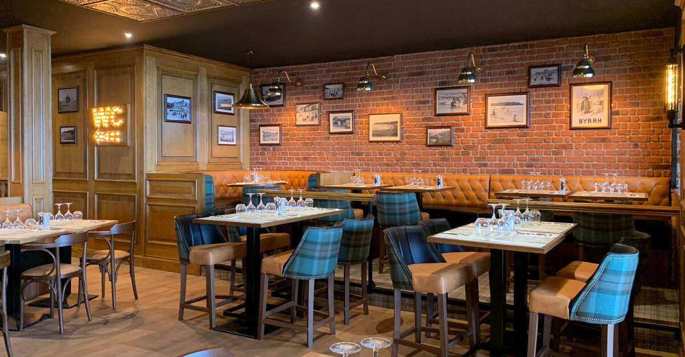
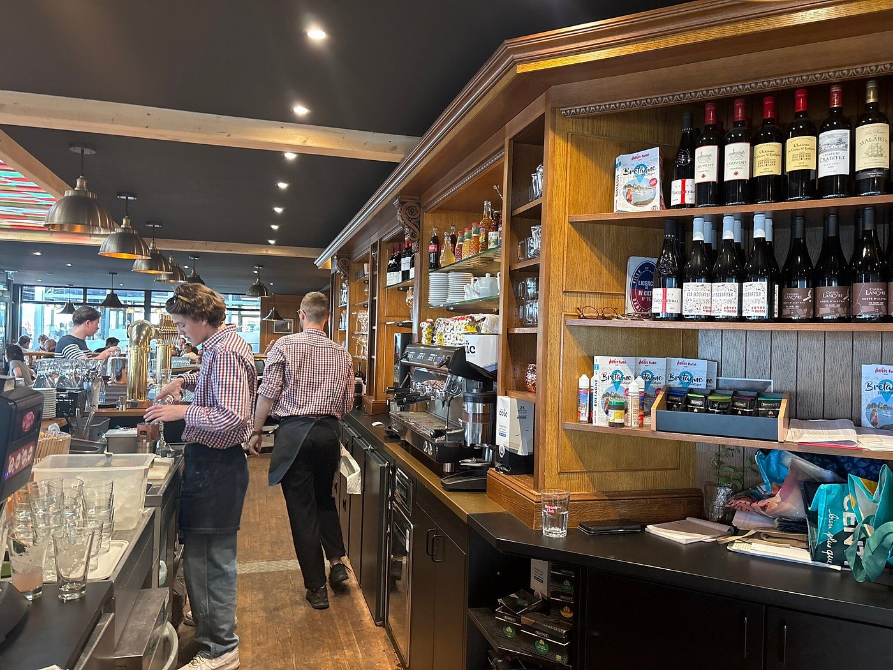
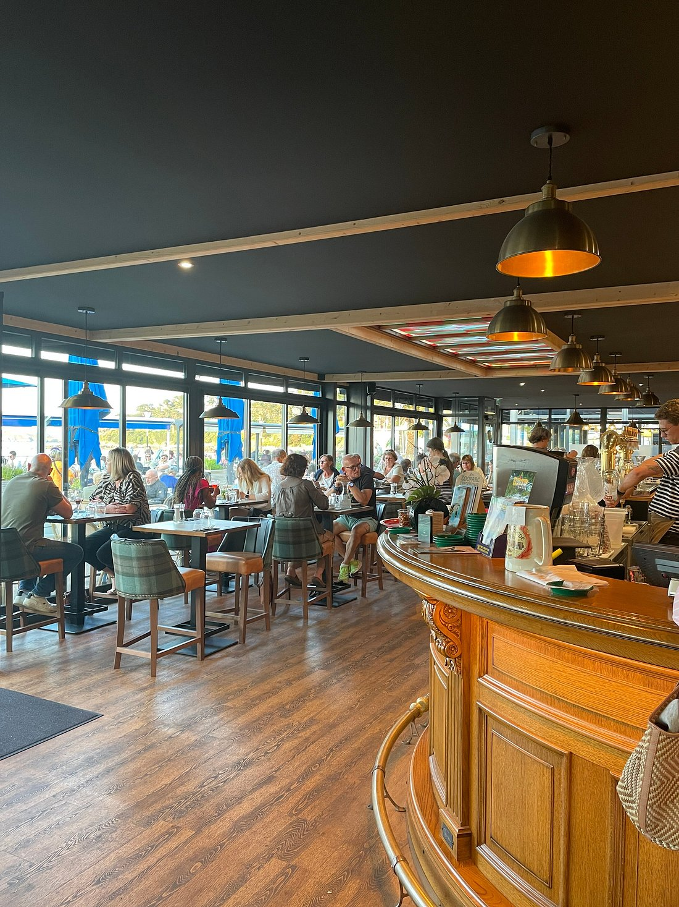
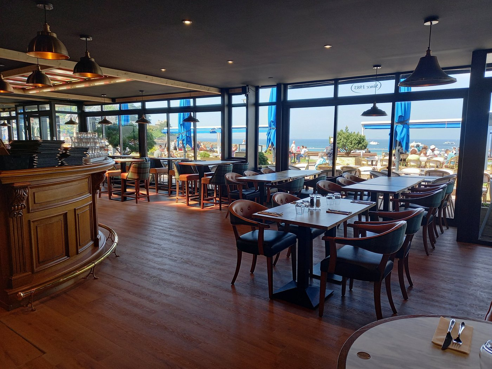
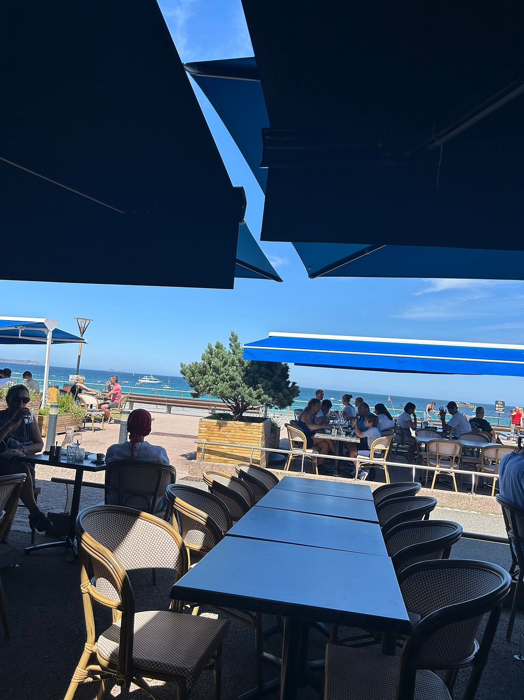
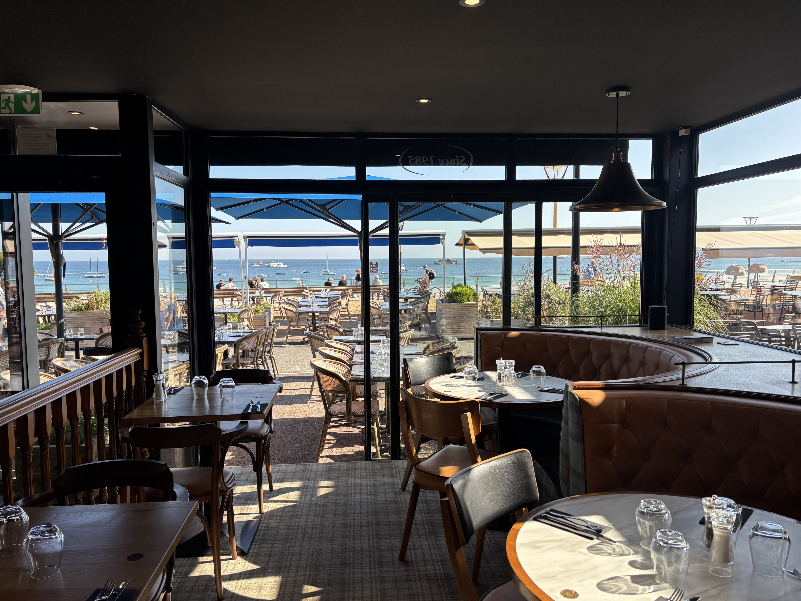

Notre histoire
Du Ker Bleu à Lo Soli
Une adresse de la plage de Trestraou, réinventée dans un esprit moderne et chaleureux.
Lo Soli a pris place dans les murs de l'ancien Ker Bleu, une institution du front de mer.
Bois clair, banquettes confortables et vieilles photographies de Perros-Guirec.


Une partie de l'équipe historique est restée, dont Marion, en salle depuis l'époque du Ker Bleu.
Ce qui compte pour nous


